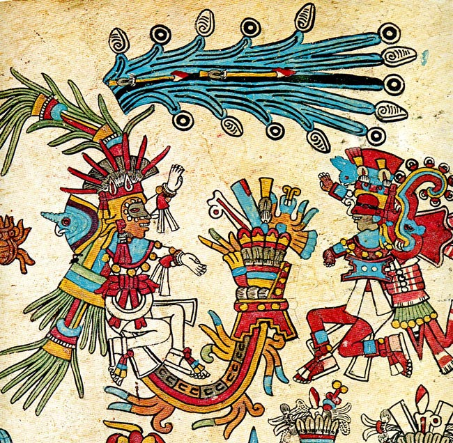
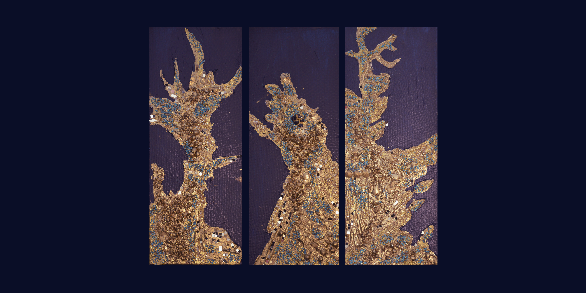
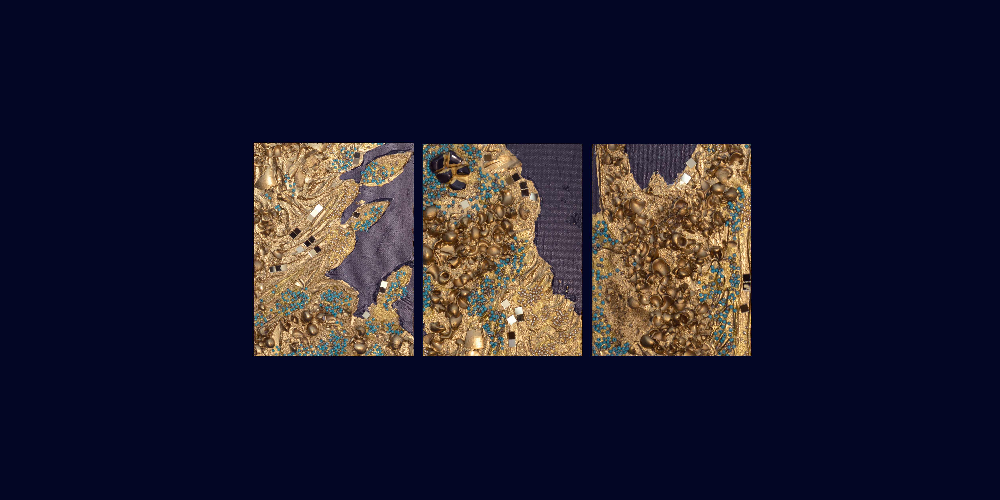

Tlalotli // Dieux de la pluie

Tlalotli // Codex Borbonicus
Dieux de la pluie
À Tenochtitlán on demande aide du dieu.
Au milieu d’étendards en papier, et dans toutes les directions, il y a des personnes debout;
c’est le temps de ses fleurs [de la pluie] .
— Chant nahua (Cantares mexicanos)
Au milieu d’étendards en papier, et dans toutes les directions, il y a des personnes debout;
c’est le temps de ses fleurs [de la pluie] .
— Chant nahua (Cantares mexicanos)
2024 - 2026

Natalia Stavrovskaja
Paris 2026
20 × 50 cm
Peinture Acrylique / Medium / Divers sur Toile
Paris 2026
20 × 50 cm
Peinture Acrylique / Medium / Divers sur Toile

Détail texture
Tlalotli // Dieux de la pluie
Divinités aquatiques
La Grande Divinité émerge d’eaux pullulant d’étoiles de mer, de créatures aquatiques et de symboles de la « valeur précieuse ». Elle porte un masque ornithomorphe et un couvre- chef avec des plumes de quetzal, et elle tient les bras ouverts. De ses mains tombent des gouttes de pluie. Son buste et la partie inférieure de son corps se transforment en une espèce de plate-forme couverte de volutes et parsemée de fleurs et d’étoiles de mer.